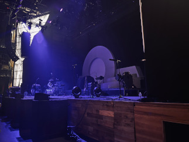
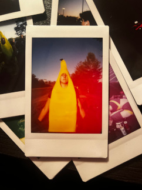

Concerts: what makes us go to them? It could be several factors, such as the concert being close to home, cheap tickets, good parking, or a favorite band/artist. However, the primary reason is the experience. It's only a once-in-a-lifetime opportunity to be able to see your favorite artist play in front of you. Why miss it? The memories you'll make will outweigh the reasons that you shouldn't go. Years later, you'll be able to tell your children about the ultimate event that changed your trajectory in life, describing the ethereal feeling of being in a venue full of people who share the same love and passion for the same musician. Heck, maybe you'll even be able to pass your merch to your children, who will pass it to their children, who will then pass it to their children, solidifying how awesome their ancestors' life was while also passing down amazing musical taste. I'll show you artists whom I've seen live and whose concerts have left a deep impression on me, so deep that I still discuss them months after.
The memories you make will stick with you forever, especially if you go with your friends. In a sense, it makes your bond even stronger, as you both are there to enjoy the same artist while also spending time together. The ability to scream lyrics at the top of your lungs with your favorite people beside you brings out confidence, but also a sense of belonging that you thought you would never have.
